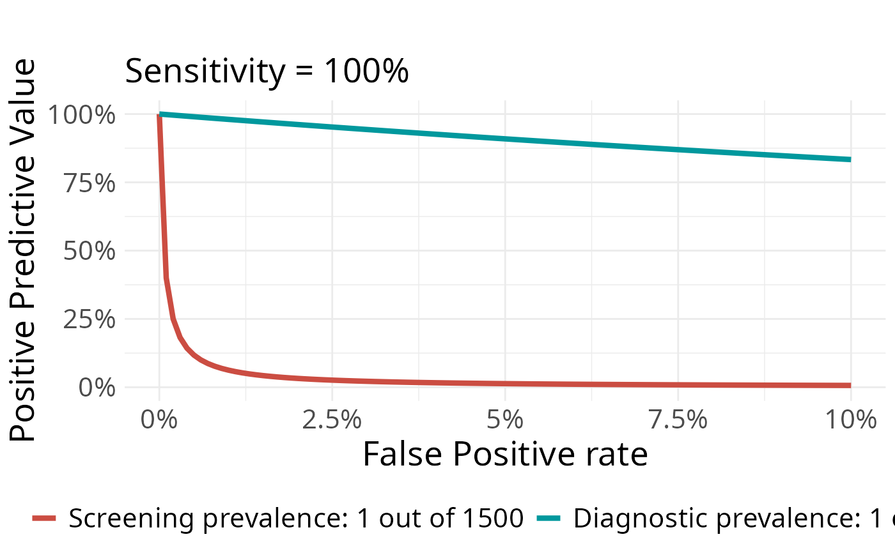

Plot PPV values for a diagnostic and a screening group
Source:R/PPV_diagnostic_vs_screening.R
PPV_diagnostic_vs_screening.RdPlot PPV associated to different levels of FP and a specific Sensitivity, for two different Prevalence groups.
Usage
PPV_diagnostic_vs_screening(
max_FP = 10,
Sensitivity = 100,
prevalence_screening_group = 100,
prevalence_diagnostic_group = 2,
labels_prevalence = c("Screening", "Diagnostic"),
folder = ""
)Arguments
- max_FP
False positive rate (1-Specificity) [0-100].
- Sensitivity
Sensitivity of the test [0-100].
- prevalence_screening_group
Prevalence of the screening group, 1 out of x [1-Inf].
- prevalence_diagnostic_group
Prevalence of the diagnostic group, 1 out of x [1-Inf].
- labels_prevalence
Labels to use for both groups.
- folder
Where to save the plot (the filename would be automatically created using the plot parameters)
Examples
# Example 1
PPV_diagnostic_vs_screening(
max_FP = 10, Sensitivity = 100,
prevalence_screening_group = 1500,
prevalence_diagnostic_group = 3
)

# Example 2. QWith custom labels
PPV_diagnostic_vs_screening(
max_FP = 10, Sensitivity = 100,
prevalence_screening_group = 1667,
prevalence_diagnostic_group = 44,
labels_prevalence = c("20 y.o.", "50 y.o.")
)